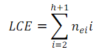

Longitud de Camino Máximo
Para definir la longitud de camino máximo o longitud de camino externo de un árbol es necesario definir los conceptos de árbol extendido y nodo especial.
Un árbol extendido es aquel en el que el número de hijos de cada nodo es igual al grado m del árbol.Si alguno de los nodos del árbol no cumple con esta condición entonces debe incorporarse al mismo tantos nodos imaginarios (o bien conocidos como especiales) como se requiera para llegar a cumplirla.
Los nodos especiales tienen como objetivo remplazar las ramas vacías o nulas que pueden tenerdescendientes y normalmente se representan con la forma de un cuadrado.
La longitud de camino externo (LCE) de un árbol es la suma de las longitudes de camino de todoslos nodos especiales del árbol. Se calcula de la siguiente forma:

Donde i representa el nivel del árbol, h su suma,el número de nodos especiales en el nivel i.